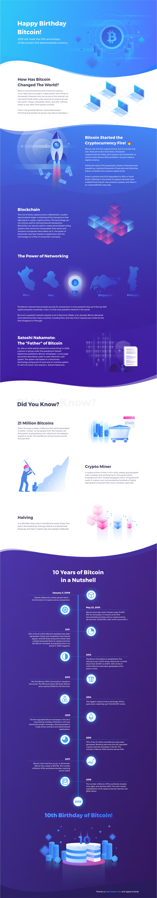

10th Anniversary of Bitcoin
See the infographic below showing a story of the world's first decentralized currency
Click image to see in full size
Special thanks to dgtmarket.com for providing interesting facts about cryptocurrencies and Agata Kubiak for the visualization
2019
All rights reserved